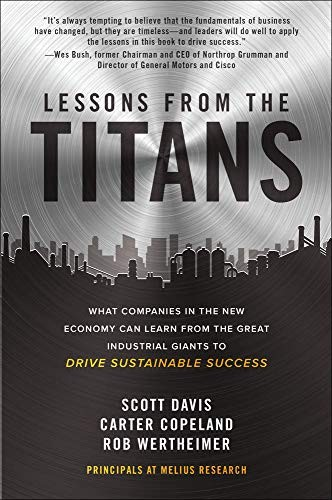

斯科特·戴维斯（Scott Davis）、卡特·科普兰（Carter Copeland）和罗布·沃思海默（Rob Wertheimer）三位作者均是华尔街顶级产业分析师，合计在工业股和航空航天国防股领域拥有超过六十年的深度研究经验，均曾多次被《机构投资者》杂志评选为各自覆盖行业的全美最佳分析师。《向巨人学习》于2020年由麦格劳-希尔出版社出版。本书的写作动机，源自三位作者在追踪美国工业巨头数十年后的一个核心洞察：通用电气、波音、卡特彼勒、联合技术——这些曾经被视为美国工业精华的企业——其盛衰兴替中蕴藏着深刻的可复制规律，而这些规律对当今"新经济"公司同样适用，却极少被系统梳理与传授。
书中以工业巨头的沉浮为主线，深入解剖了"伟大的工业企业是如何做到卓越"以及"它们又是如何在错误中失去卓越"的双重历史。以通用电气为例，书中梳理了从杰克·韦尔奇到杰弗里·伊梅尔特时代的战略演变，揭示了资本配置逻辑的转变如何在数年间将一个曾经的工业王国蚕食殆尽。与此形成对照的是霍尼韦尔（Honeywell）的复苏故事——戴维·寇特（Dave Cote）如何在任期内以严格的运营纪律和长期主义思维重建了这家公司的竞争力。达纳赫（Danaher）、斯坦利百得（Stanley Black & Decker）和TransDigm等相对低知名度但极具创造力的工业企业，同样在书中获得了深入剖析。这种将成功与失败并置研究的方法，使读者得以从多维度理解"可持续成功"的真实含义。
书中归纳的共同规律颇具启发性：真正卓越的工业企业，无不将运营系统（Operating System）的建立视为核心能力；它们对资本回报率的关注超越了对收入增速的关注；它们的企业文化将持续改进（Continuous Improvement）视为不可动摇的基础价值观，而非周期性的管理项目。同时，书中也直指那些曾经辉煌却走向衰落的企业的共同病症：过度依赖财务工程、忽视运营基础、将季度利润凌驾于长期竞争力建设之上。这些教训并非历史的陈迹，而是对今日企业管理者的直接警示。
对于商业投资者而言，《向巨人学习》提供的分析视角极为宝贵：三位经验丰富的分析师，从长达数十年的行业研究经验出发，归纳出一套评估工业企业质量的核心维度。阅读本书，你将学会区分一家工业公司的繁荣究竟源于坚实的运营能力，还是源于财务杠杆的短期放大效应——而这一区分能力，在任何经济周期中都是把握长期投资价值的关键所在。